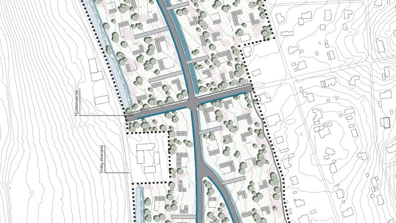
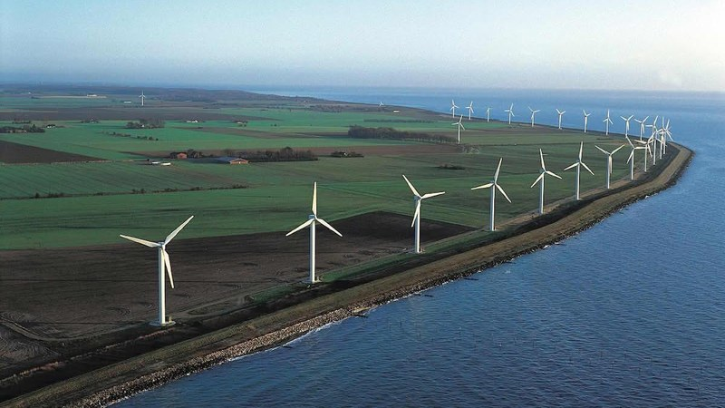
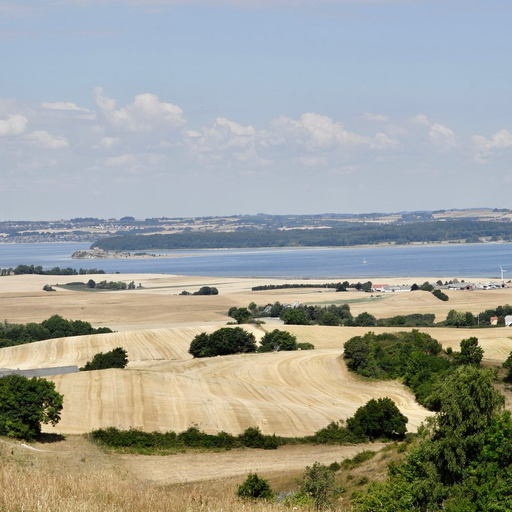
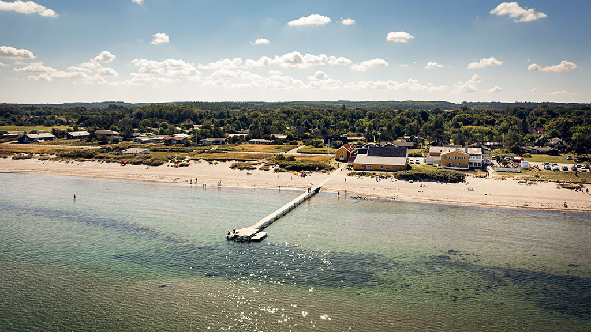

👤
Elsebeth Due Kjeldsen
Formand
elsebethduekjeldsen@gmail.com
Uafhængig forening · Djursland
For vores kyst, natur og lokalsamfund
Om foreningen
Kystforeningen Djursland er en åben, partipolitisk uafhængig forening. Vi samler borgere om bevarelsen af Djurslands kystlandskaber, natur og rekreative områder gennem viden, fællesskab og konkrete aktiviteter.
Kystforeningen Djursland
Støt bevarelsen
Alle kan melde sig ind – uanset bopæl. Dit medlemskab støtter foreningens arbejde for naturen og kystlandskabet.
Hvem er vi
Kystforeningen Djursland er en partipolitisk uafhængig forening. Vi arbejder for bevarelse af naturværdier, kystlandskaber og rekreative muligheder på Djursland — gennem oplysning, aktiviteter og åben dialog med borgerne.
Bevare naturen og kystlandskaberne til glæde for nuværende og kommende generationer.
Foredrag, vandringer, borgermøder og formidling af viden om natur, miljø og planlægning.
Åben for alle borgere. Stemmeret og indflydelse på generalforsamlingen.
Ingen partipolitiske eller kommercielle bindinger. Vi taler naturens og borgernes sag.
Vi formidler om planprocesser og inddrager borgerne i demokratisk dialog.
Vi formidler viden om Djurslands kystlandskaber, biodiversitet og havmiljø.
Hvad sker der
Alle arrangementer er åbne for medlemmer og interesserede borgere. Tilmelding ikke nødvendig, medmindre andet er angivet.
Henter aktiviteter…
Vi følger sagerne

Et nyt sommerhusområde med op til 108 store partyhuse ved Dråby strand rejser spørgsmål om trafik, adgang og kystpåvirkning.

Naboerne og foreningen er i dialog med myndighederne om planerne for vindmøller ved Vosnæs. Ministerafgørelsen afklarer, hvem der har kompetencen til at afgøre sagen.

Planerne om bosætning ved Ålerne og havneudvikling ved Grobund berører kystnærhedszonen og de rekreative interesser.
Miljøstyrelsen behandler ansøgning om tilladelse til råstofindvinding på Hjelm Banke. Foreningen følger sagen tæt.

Foreningen følger arbejdet med kystbeskyttelse og erosionsbekæmpelse ved Fjellerup Strand i Norddjurs Kommune.
Der er planer om et nyt sommerhusområde ved Dråby strand syd for Ebeltoft med op til 108 store sommerhuse – i folkemunde kaldet "partyhuse" på grund af størrelsen. Husene forventes at ligge i op til to etager og har en størrelse, der langt overstiger det typiske sommerhus.
Sagen rejser spørgsmål om trafikbelastning på de smalle veje, offentlig adgang til kysten og påvirkningen af det lokale miljø og nabolag.
Syddjurs Kommune offentliggjorde den 21. oktober 2026 forslag til Lokalplan 474 for sommerhusområde ved Dråby Strand. Den offentlige høring løber frem til 16. december 2026 kl. 23.59. Høringssvar sendes via kommunens hjemmeside.
Syddjurs Kommune afholder borgermøde om Lokalplan 474 den 2. november 2026 kl. 17.30 på Rådhuset i Ebeltoft. Alle interesserede er velkomne.
Syddjurs Byråd har sendt et lokalplanforslag i offentlig høring, der åbner for et nyt sommerhusområde ved Dråby Strand med op til 108 sommerhuse på ca. 16 hektar ca. 2 km øst for Dråby. Hvert hus kan være op til 180 m² med op til 50 m² sekundær bebyggelse. Husene placeres i spredte byggefelter med fælles grønne arealer imellem.
Byrådet vedtog at sende forslaget i høring med 21 stemmer for og 6 imod. SF, Enhedslisten, Radikale Venstre og Alternativet stemte imod i dets nuværende form med henvisning til natur, miljø, lokalt nærmiljø og trafikforhold.
Kommunens miljøscreening konkluderede, at planen ikke forventes at medføre væsentlig påvirkning af miljøet. Der udarbejdes derfor ikke en fuld miljøvurdering. Spildevandsløsning er under bearbejdning – byrådet stemte for at administrationens redegørelse revideres, inden planen offentliggøres endeligt.
| Offentliggjort | 21. oktober 2026 |
| Høringsfrist | 16. december 2026 kl. 23.59 |
| Borgermøde | 2. november 2026 kl. 17.30 – Rådhuset, Ebeltoft |
| Myndighed | Syddjurs Kommune |
Høringen er åben frem til 16. december 2026. Alle kan sende bemærkninger til kommunen via linket ovenfor. Det aktuelle antal modtagne høringssvar oplyses af Syddjurs Kommune.
Kystforeningen Djursland følger planprocessen og formidler offentligt tilgængeligt materiale. Vi er opmærksomme på sagens potentielle konsekvenser for kystadgang, trafik og landskab og vil deltage i relevante høringer.
Artiklerne herunder er eksterne mediers egne tekster og repræsenterer ikke Kystforeningens holdning.
Officielle kommunale kilder om planerne for sommerhusområdet ved Dråby strand.
Syddjurs Kommune har gennemført en miljøscreening af Lokalplan 474 i henhold til Lov om miljøvurdering af planer og programmer. Screeningen konkluderede, at planen ikke forventes at medføre væsentlig indvirkning på miljøet, og der udarbejdes derfor ikke en fuld miljøvurdering (miljørapport).
Afgørelsen om ikke at udarbejde miljørapport (screening-afgørelsen) indgår i høringsmaterialet og kan tilgås via kommunens høringsportal ovenfor.
Syddjurs Kommune behandler planerne om opstilling af nye kæmpevindmøller ved Ebeltoft Færgehavn og i det kystnære område ved Vosnæs på Djursland. Møllerne er planlagt til at være 150 meter høje og vil ændre kystlandskabets karakter markant.
Planerne er en del af Kommuneplan 2024 og berører punkt 1.1.T2, som reserverer arealer til tekniske anlæg i det kystnære område.
Minister for byer og landdistrikter Signe Munk (SF) har truffet afgørelse i sagen om planveto mod Aarhus Kommunes lokalplan for vindmøller ved Vosnæs. Ministeren ophæver Syddjurs Kommunes veto og åbner dermed for, at Aarhus kan vedtage lokalplanen. Borgmester Michael Harregaard Stegger (S, Syddjurs) betegner afgørelsen som "dybt skuffende" og oplyser, at kommunen vil vurdere sine videre muligheder. Kilde: Din Avis, 22. oktober 2026
Energi-, byer- og landdistriktsminister Morten Dahlin (V) skulle efter planen have truffet afgørelse i plan-veto-sagen efter vinterferien 2026. Afgørelsen blev udskudt på ubestemt tid, fordi et folketingsvalg blev udskrevet. Sagen overgik til den nye minister efter regeringsskiftet.
Den offentlige høring om Lokalplan 1237 afsluttedes den 14. august 2025 med 784 indsendte svar. Teknik og Miljø (Aarhus) har udarbejdet et resumé, men offentliggørelse afventer, at politikerne har haft sagen til behandling.
Syddjurs Kommune nedlagde i juli 2025 veto mod Aarhus Kommunes lokalplan for vindmøllerne ved Vosnæs. Vetoretten medfører, at sagen skal afgøres af ministeren for by og landdistrikter. Kommunerne afholdt mæglingsmøde, men nåede ikke til enighed.
Kilde: Aarhus Kommune – Deltag · Din Avis, 5. marts 2026 · Din Avis, 22. oktober 2026
Kystforeningen Djursland indsendte høringssvar i januar 2025 med indsigelse mod de planlagte vindmøller ved Ebeltoft Færgehavn. Vi argumenterede for, at de høje møller vil ødelægge det åbne kystlandskab og forringe de rekreative og visuelle kvaliteter i området.
Ministeren har ophævet Syddjurs Kommunes indsigelse mod Aarhus Kommunes forslag til kommuneplantillæg nr. 169 og lokalplan nr. 1237 om tre vindmøller på op til 150 meter ved Vosnæs. Afgørelsen betyder, at Aarhus Kommune kan fortsætte planprocessen. Aarhus Byråd skal fortsat beslutte, om planerne skal vedtages endeligt.
| Myndighed | Ministeriet for Byer og Landdistrikter (minister Signe Munk, SF) |
| Dato | 22. oktober 2026 |
| Sagsnummer | 2026-3180 |
| Omfang | 6 sider, PDF |
| Klageadgang | Kan ikke påklages til Planklagenævnet |
Artiklerne herunder er eksterne mediers egne tekster og repræsenterer ikke Kystforeningens holdning.
Officielle kommunale og myndighedskilder om planerne for vindmøller ved Vosnæs/Ebeltoft Færgehavn.
Syddjurs Kommune har planer om at udlægge et areal på 65 ha ved Ålerne – fra Tolløkke Skoven til Færgehavnen – til en landsby for det alternative samfund Grobund. Arealet ligger i det kystnære område og er i dag åbent naturlandskab med store rekreative og landskabelige værdier.
Foreningen blev stiftet i juli 2024 som direkte reaktion på disse planer og har siden fulgt sagen tæt og afgivet adskillige høringssvar og indsigelser.
Kommunen sendte de 5,5 ha jord i offentligt udbud i maj 2024. Fonden Gældfri har forhandlet med kommunen om arealet. Helhedsplan for Ålerne blev vedtaget af byrådet den 25. juni 2025. En helhedsplan er ikke juridisk bindende og giver ikke i sig selv ret til at bygge – en lokalplan skal vedtages særskilt, inden et byggeprojekt kan igangsættes.
August 2026: Grobund ansøger om fornyelse og udvidelse af dispensationen fra Lokalplan 140 for ejendommen Kaarsbergsvej 2. Foreningen indsendte indsigelse.
Juni 2026: Lokalplanprocessen udsat til 4. kvartal 2026. Uenighed om spildevandsløsning fortsætter.
April 2026: Dialogen mellem kommunen og Grobund viser stor uenighed om håndtering af spildevand og "humane gødning". Kommunen gør opmærksom på ulovlighed.
2025: Helhedsplanen for Ålerne vedtages af et enigt byråd i sommeren 2025. Den er juridisk ikke bindende.
Foreningen har siden sin stiftelse i juli 2024 arbejdet aktivt med Grobund-sagen. Vi formidler offentligt tilgængeligt materiale, følger planprocessen tæt og afgiver høringssvar og indsigelser ved alle relevante høringer.
Vi har varslet byrådsmedlemmerne om personligt erstatningsansvar ved ulovlig tilsidesættelse af udbudsregler, og vi opfordrer løbende borgerne til selv at afgive høringssvar.
Artiklerne herunder er eksterne mediers egne tekster og repræsenterer ikke Kystforeningens holdning.
Officielle kommunale og myndighedskilder om Helhedsplanen for Ålerne og Grobund-projektet.
Miljøstyrelsen, som er statslig myndighed for råstofindvinding på havbunden, har den 6. februar 2026 meddelt Aarhus Havn og Aarhus Vand en tilladelse til at indvinde op til 8 millioner m³ sand fra havbunden sydøst for øen Hjelm i Kattegat.
Indvindingen er planlagt til at levere materialer til anlægsprojekter ved Tangkrogen i Aarhus. Tilladelsen er meddelt efter en miljøvurdering, og Miljøstyrelsen har i sin afgørelse vurderet, at indvindingen kan gennemføres på de fastsatte vilkår.
Hjelm Banke er en undersøisk sandbanke i Kattegat. Området ligger i nærheden af Djurslands kyst og er af betydning for de marine naturforhold i Kattegat.
Kystforeningen Djursland følger sagen og vil orientere om eventuelle høringer eller initiativer.
Miljøstyrelsen meddeler tilladelse. Aarhus Havn og Aarhus Vand modtager tilladelse til indvinding af op til 8 millioner m³ sand fra Hjelm Banke. Tilladelsen er udstedt med en række vilkår og er baseret på Miljøstyrelsens miljøvurdering af projektet.
Kystforeningen Djursland har endnu ikke iværksat konkrete initiativer i relation til Hjelm Banke-sagen. Vi følger udviklingen og vil orientere vores medlemmer, hvis sagen giver anledning til handling fra foreningens side.
Har du oplysninger eller synspunkter i denne sag, er du velkommen til at kontakte os.
Dokumentet er tilgængeligt direkte hos Miljøstyrelsen (mst.dk). Kystforeningen Djursland er ikke afsender af afgørelsen.
Debatindlæg afspejler forfatterens egne synspunkter og er ikke udtryk for Kystforeningen Djurslands officielle holdning.
Råstofindvinding på havbunden reguleres af Miljøstyrelsen, som er en statslig myndighed under Miljøministeriet – ikke en kommunal myndighed.
Norddjurs Kommune arbejder med et samlet udviklingsprojekt kaldet Fjellerup Udvikling, der omfatter fire indsatsområder direkte ved Fjellerup Strand. Projektet har til formål at udvikle stranden som turistmål og rekreativt område.
Kommunen beskriver følgende fire nedslag i projektet:
Området ved de eksisterende pæle i strandkanten indgår i planlægningen som et rekreativt opholds- og aktivitetsrum.
Der planlægges en promenade og badebro ved Fjellerup Strand, der skal styrke ophold og adgang til vandet for badegjæster og besøgende.
Den tidligere Makrelfabrik ved stranden er udpeget til omdannelse. Kommunen oplyser, at det forfaldne byggeri kan udvikles til turiststed med butikker og spisesteder.
Det fjerde nedslag, kaldet "Tæppet", er et strandnært areal der indgår i helhedsplanlægningen for området.
Ovenstående beskriver kommunens egne oplysninger om projektet. Kystforeningen Djurslands vurderinger fremgår under "Vores arbejde".
Norddjurs Kommune offentliggjorde den 9. oktober 2026 en officiel meddelelse om lokalplanens vedtagelse. Kommunen beskriver, at den vedtagne lokalplan muliggør ny strandpromenade og badebro, rekreative opholdsarealer samt renovering eller omdannelse af to forfaldne bygninger. Tidsplanen peger mod sommeren 2028 for åbning af badebro og opholdsområder.
Vigtigt: Lokalplanens vedtagelse er ikke en fuld anlægsgodkendelse. Der udestår yderligere myndighedstilladelser (bl.a. fra Kystdirektoratet), projektering og en aftale med rådgiverfirma. Kommunalbestyrelsen skal derudover i starten af 2027 træffe valg om tre kommunale anlægselementer.
Norddjurs Kommunalbestyrelse vedtog den 6. oktober 2026 endeligt Lokalplan 134-707 og Kommuneplantillæg nr. 3 for Fjellerup Udvikling. Planerne er vedtaget med de ændringer, forvaltningen anbefalede efter den offentlige høring – herunder at kobber udgår som materiale, at en del af matrikel 11u udtages af planen, og at belysning i delområde 3 begrænses til stibelysning. Beslutningen var forberedt i Natur-, Miljø- og Teknikudvalget den 21. september og Økonomiudvalget den 29. september 2026.
Vigtig præcision: Vedtagelsen af lokalplanen er ikke det samme som fuld anlægsgodkendelse. Der kræves fortsat øvrige tilladelser fra Norddjurs Kommune og Kystdirektoratet, samt en prøvegravning ved delområde 4. Kommunen forventer aftale med rådgiverfirma inden udgangen af 2026, og politikere skal i starten af 2027 træffe valg for tre kommunale elementer.
Høringsfristen for Lokalplanforslag 134-707 og Kommuneplantillæg nr. 3 udløb den 25. juni 2026. Der indkom 13 høringssvar, herunder ét fra Styrelsen for Grøn Arealomlægning og Vandmiljø (SGAV). Kommuneplantillægget blev genudsendt den 2. juli 2026 som følge af en teknisk fejl på Plandata.dk – ny høringsfrist den 27. august 2026.
Natur-, Miljø- og Teknikudvalget offentliggjorde Forslag til Lokalplan 134-707 og Kommuneplantillæg nr. 3 med tilhørende miljørapport den 23. marts 2026. Planen opdeler projektet i fire delområder svarende til den eksisterende forsøgsdispensation.
Kilde: Kommunalbestyrelsens dagsorden og beslutningsprotokol, 6. oktober 2026 · Norddjurs Kommune – Fjellerup Udvikling
Bemærk: Ibrugtagning af badebro og rekreative arealer forventes sommeren 2028 – under forudsætning af, at lokalplanen ikke ankes, og at øvrige tilladelser opnås rettidigt.
Kystforeningen Djursland arbejder ikke kun med sager i Syddjurs Kommune. Fjellerup-sagen illustrerer, at foreningen følger relevante kystsager i både Syddjurs og Norddjurs – overalt hvor kystlandskab, natur og rekreative værdier er i spil.
Vi formidler offentligt tilgængeligt materiale og følger kommunens planproces. Foreningen vil deltage i relevante høringer, hvis planerne berører kystlandskabet på måder, der falder inden for foreningens formål.
Kystforeningen har endnu ikke afgivet høringssvar i Fjellerup-sagen. Siden opdateres løbende.
Dokumenterne nedenfor er offentliggjort af Norddjurs Kommune. Kystforeningen Djursland har ikke afgivet egne dokumenter i sagen endnu.
📄 Beslutningsprotokol – Kommunalbestyrelsen 6. oktober 2026 ↗ 📄 Kommuneplantillæg nr. 3 – Fjellerup Udvikling ↗ 📄 DN Norddjurs henvendelse og forvaltningens svar ↗Øvrige dokumenter – herunder miljørapport, samlede høringssvar og politiske sagsdokumenter – er tilgængelige på Norddjurs Kommunes projektside.
Artiklerne herunder er eksterne mediers egne tekster og repræsenterer ikke Kystforeningens holdning.
Officielle kommunale kilder om Fjellerup Udvikling og den tilhørende lokalplanproces i Norddjurs Kommune.
Hvem driver foreningen
Valgt på ordinær generalforsamling den 25. september 2026.
Vedtægter · Nyhedsbreve · Høringssvar
Alle officielle dokumenter, høringssvar og indsigelser er frit tilgængelige. Klik for at åbne eller downloade som PDF.
Tekniske rapporter, myndighedsafgørelser, høringssvar og presseomtale vedrørende planerne om etablering af landsbyen Grobund ved Ålerne syd for Ebeltoft.
Støt bevarelsen
Alle kan melde sig ind – uanset bopæl.
Demokrati & borgerinddragelse
Foreningen afgiver høringssvar og indsigelser i offentlige planprocesser der berører Djurslands kystlandskab og natur. Alle dokumenter er frit tilgængelige.
Vil du støtte foreningens arbejde? Du er altid velkommen til at
Skriv til os
Send til:
Kystforeningen Djursland er dataansvarlig for de personoplysninger vi behandler.
Oplysningerne bruges til at administrere medlemskab og besvare henvendelser (GDPR art. 6, stk. 1, litra a og b).
Medlemsoplysninger slettes senest 1 år efter udmeldelse.
Ret til indsigt, berigtigelse og sletning. Klage til Datatilsynet.
Kontakt: info@kystforeningendj.dk
Denne hjemmeside gemmer udelukkende funktionelle data i din browser. Vi anvender ingen tracking, ingen analysecookies og ingen reklamecookies.
Spørgsmål: info@kystforeningendj.dk